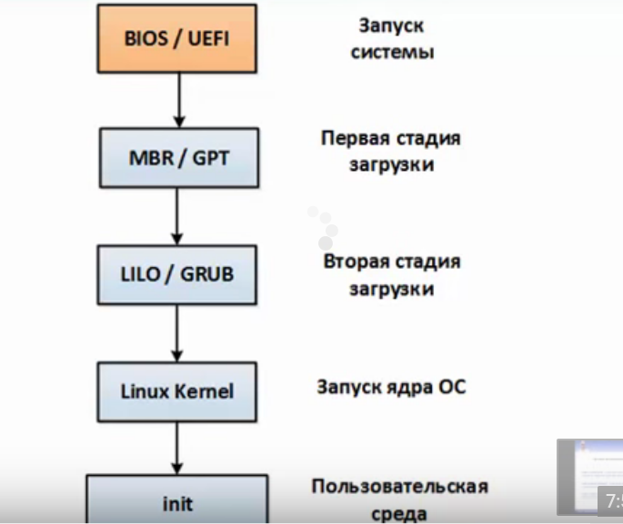
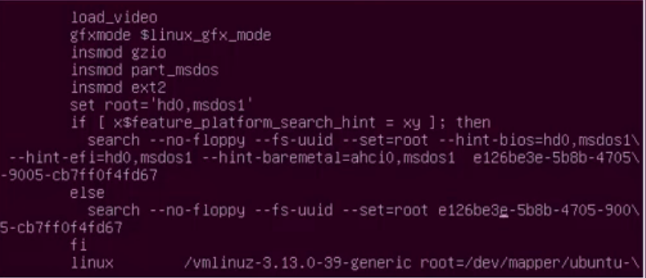

Инициализация системы

BIOS/UEFI
MBR/GPT - загрузчик часть машинного кода
LILO/GRUB
Kernel
Init
Загрузчики
- NTLDR - win
- LILO - linux
- GRUB - GNU ubuntu

- BootX - MAC OS
- Chameleon
dmesg - вывод сообщении ядра
pstree - вывод процессов в виде дерева
/etc/init.d - директория инициализации, скрипты запускают службы
./network stop - остановить службу
./network start - запустить службу
либо так
service network restart
SysV
Команды
Upstart
Служба - перезапускается
Задача - не перезапускается
/etc/init - файлы заданий
initctl - утилита управлением upstart